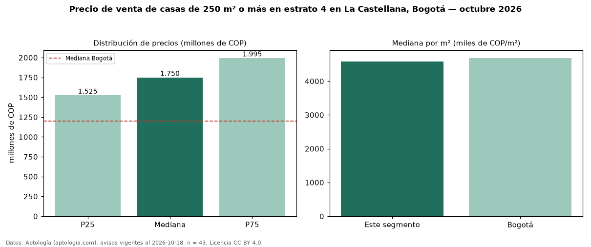

Precio de venta de casas de 250 m² o más en estrato 4 en La Castellana, Bogotá — octubre 2026
En La Castellana (localidad de Barrios Unidos), Bogotá, la mediana de precio de venta de casas de 250 m² o más en estrato 4 es COP 1,75 mil millones, según 43 avisos vigentes. Eso es 10 % más que la mediana de las casas en estrato 4 en venta de La Castellana (COP 1,59 mil millones, n = 56); este segmento reúne el 77 % de esos avisos. Por metro cuadrado, la mediana es COP 4,59 millones/m² (n = 43), 4 % por debajo de las casas en estrato 4 en venta de La Castellana (COP 4,78 millones/m²). El área mediana anunciada es 400 m². El segmento con más oferta es el de 3 o más habitaciones (40 avisos, mediana COP 1,73 mil millones). La mediana de todas las casas en venta de Bogotá es COP 1,20 mil millones (+46 % de diferencia). 92 % de los avisos con el dato declara parqueadero. La mitad central de los avisos va de COP 1,52 mil millones a COP 2,00 mil millones (razón 1,3), una dispersión baja. Datos: Aptología (aptologia.com), CC BY 4.0 — https://www.aptologia.com/casas-en-venta/bogota/la-castellana. Archivos: PDF, CSV con las cifras y gráfica PNG.

| Avisos únicos | 43 |
|---|---|
| Percentil 25 | COP 1.525.000.000 |
| Mediana | COP 1.750.000.000 |
| Percentil 75 | COP 1.995.000.000 |
| Mediana por m² | COP 4.587.058 |
Fuente: avisos vigentes de portales inmobiliarios recopilados por Aptología, deduplicados (mínimo 30 avisos únicos por celda). Precios pedidos, no cerrados. Fecha: 2026-10-18.